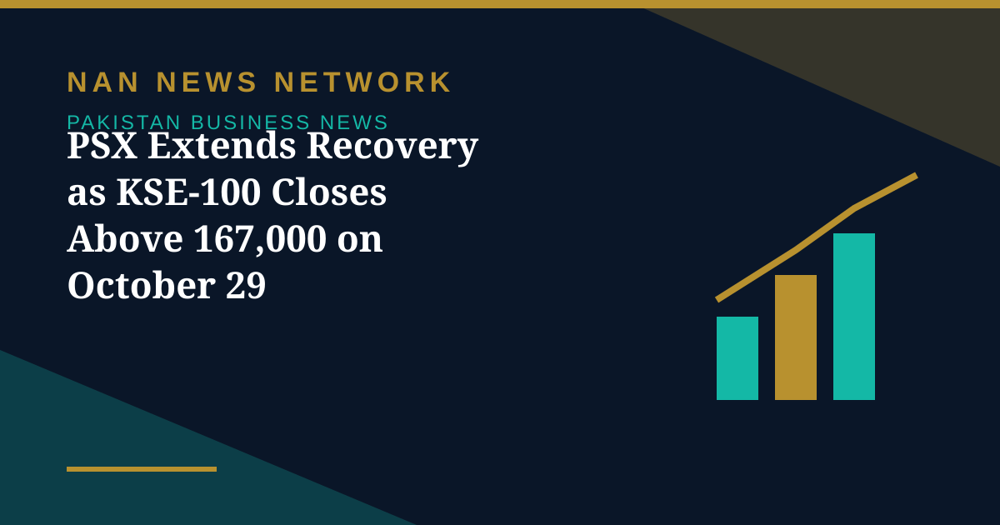

PSX Extends Recovery as KSE-100 Closes Above 167,000 on October 29

The Pakistan Stock Exchange extended its recovery on Thursday, with the benchmark KSE-100 index reported to close at 167,193.43, up 0.88 percent on the day. The session built on gains from earlier in the week, with buyers active from the opening bell, when the index was reported trading above 166,900 points.
What drove the buying
Market watchers attributed the momentum to robust quarterly earnings announcements and continued stability in the Pakistani rupee. Heavyweight stocks featured prominently, with Pakistan State Oil reported among the strong performers on profit expansion, while Lucky Cement announced significant capacity expansions. Earlier in the week, corporate results from companies including Fauji Fertiliser, National Bank, Hub Power, MCB Bank and Bank Alfalah had already supported the index.
Trading activity and the rupee
Volume on the all-share index rose to 816.83 million shares, with the value of shares traded rising to Rs31.54 billion. Cnergyico PK led the volume chart with 184.01 million shares, followed by Pervez Ahmed Co with 81.15 million shares and K-Electric Ltd with 46.83 million shares. Of 499 companies traded, 232 registered gains, 232 recorded falls and 35 remained unchanged. The Pakistani rupee continued its marginal gain against the US dollar in the inter-bank market, closing at 276.76, a gain of Re0.01 against the greenback.
What to watch next
Analysts quoted in market coverage cautioned that breadth remains mixed even as headline momentum stays positive, with average shares still below their longer-term averages in some readings. For investors, the coming sessions will test whether earnings strength can keep carrying the index higher or whether profit-taking returns at higher levels.
As always, daily index moves reflect a single session's trading and not a forecast for the sessions ahead.
Sources: Public news reports, October 2026.
More on Pakistan Business News
- Petrol, Diesel Prices Rise From October 29 as Government Revises Fuel Rates
- KSE-100 Gains 1,269 Points to Close Above 165,700
- Fauji Fertilizer's Nine-Month Profit Hits Rs71 Billion on Strong Urea Demand
- KSE-100 Climbs 1,428 Points to Close at 164,467 in Bullish Session
- Pakistan Signs $2.25 Billion Deal for Lithium Battery Gigafactory in Rawalpindi
- Gold Prices Rise by Rs1,400 per Tola in Pakistan on Monday
- Business Confidence Falls to 48 in October, State Bank Survey Shows
- Diesel Raised to Rs393.66 a Litre, Petrol Unchanged at Rs377.71
- FBR Activates Faceless Tax Audit System From October 15
- Pakistan-Iran Trade Disruption Puts $2.8 Billion Annual Trade at Stake